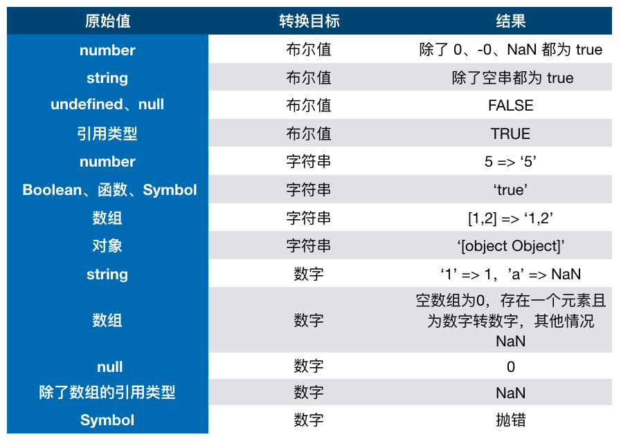

知识点
JS中类型的转换
在 JS 中类型转换只有三种情况，分别是：
- 转换为布尔值
- 转换为数字
- 转换为字符串
在条件判断时，除了 undefined， null， false， NaN， ''， 0， -0，其他所有值都转为 true，包括所有对象。
Boolean 转字符串这行结果我指的是 true 转字符串的例子，函数、Symbol转换为字符串函数以及字符串Symbol
对象转原始类型
- 如果已经是原始类型了，那就不需要转换了
- 如果需要转字符串类型就调用 x.toString()，转换为原始类型的话就返回转换的值。不是字符串类型的话就先调用 valueOf，结果不是原始类型的话再调用 toString
- 调用 x.valueOf()，如果转换为原始类型，就返回转换的值
- 如果都没有返回原始类型，就会报错
案例（x==y）
转换流程（图形）
转换流程（文字）
- 首先判断两者类型是否相同，相同比较大小
- 判断是不是null与undefined，是直接返回true
- 判断是不是string与number，是string转number（Number（））
- 判断其中一方是不是boolean，是boolean转number
- 判断其中一方是不是object，是object转原始类型
var、let 及 const 区别
var存在提升，能在声明前使用。let、const因为暂时性死区的原因，不能在声明前使用
var在全局作用域下声明的变量会挂载到window上
let和const一致，const声明之后不能修改并且必须立马赋值
试题
JavaScript规定了几种语言类型
- 6种原始类型Number、Boolean、String、Symbol、Null、Undefined，1种引用类型Object
- Symbol（ES6信息）
- Null不是对象，typeof null 会返回对象，这是一个BUG
对象类型和原生类型的不同之处？函数参数是对象会发生什么问题？
问题1：
- 除了原始类型其他都是对象类型
- 原始类型存储的值，对象类型存储的是地址
问题2：
- 函数传参传递的是对象指针副本
typeof 是否能正确判断类型？instanceof 能正确判断对象的原理是什么？
- typeof：对于原始类型，除了null其他都能正确判断；对于对象，除了函数会判断成function，其他都判断成为object
- instanceof：内部机制是通过原型链判断的，但是无法判断原始类型（可以通过Symbol.hasInstance）
== 和 === 有什么区别？
- ==会进行隐式类型转换
- ===不会进行类型转换
[]==![]为什么返回true
- ![] 转boolean，boolean转number为0
- []调用.toString转原始类型为''，转number为0
- 比较大小成立
{}=={}为什么返回false
比较两者对象的地址
[]==[]为什么返回false
两者是对象，比较两者的地址
什么是浅拷贝？如何实现浅拷贝？什么是深拷贝？如何实现深拷贝？
- 新建一个对象的指向老的对象
- {...}、Object.assign、postMessage、JSON.stringify()---（值为undefined、function、symbol会丢失）
- 对象中有引用了另一个对象
- 递归拷贝（需要在迭归中判断对象的类型，比如objeact（需要判断Array）、function、原始类型）
什么是提升？什么是暂时性死区？var、let 及 const 区别？
知识点：var、let及const区别
示例图
JS中类型的转换
